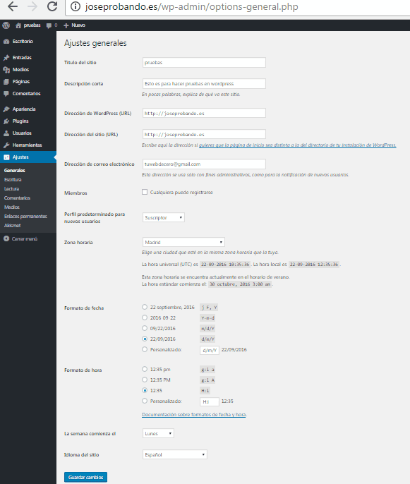
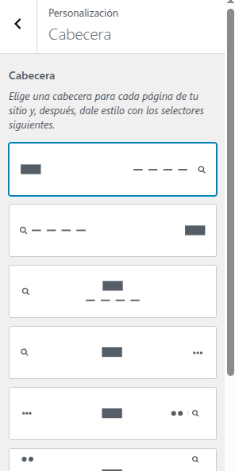
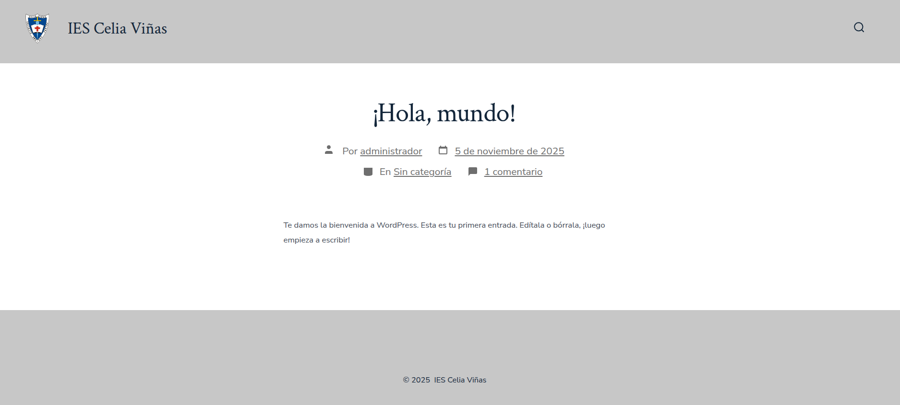
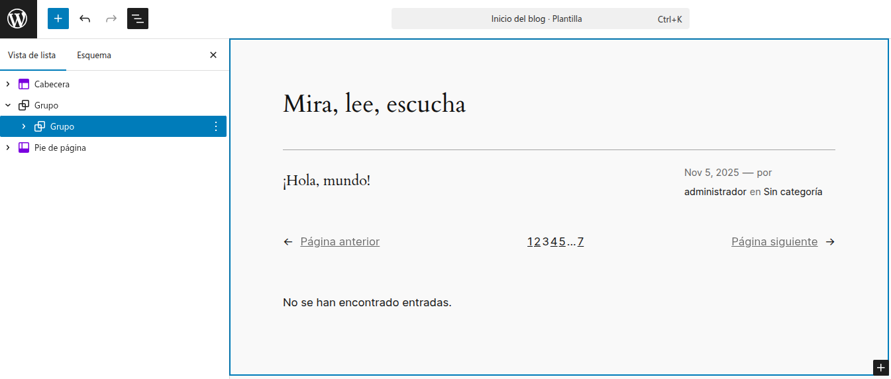
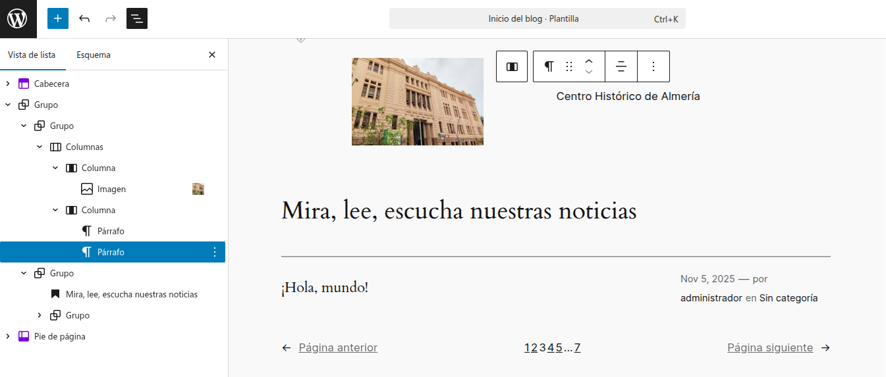

UT2. TAREA 2: CONFIGURACIÓN GENERAL Y ASPECTO DE WORDPRESS
FICHA TÉCNICA DE LA ACTIVIDAD ¶
| Unidad Didáctica | Unidad 2: Instalación, configuración y utilización de Gestores de Contenido (CMS) |
| Nombre de la Tarea | UT2. Tarea 2: Configuración general y aspecto de WordPress |
| Resultado de Aprendizaje (RA) | RA1: Instala gestores de contenidos, identificando sus aplicaciones y configurándolos según requerimientos. |
| Criterios de Evaluación (CE) |
CE d) Se ha personalizado la interfaz del gestor de contenidos. CE g) Se han instalado y configurado los módulos y menús necesarios. CE j) Se han habilitado foros y establecido reglas de acceso (comentarios para usuarios registrados). |
| Tiempo Estimado | 4 horas (Equivalente a 1 sesión semanal en el aula-taller de informática) |
MÉTODO DE ENTREGA Y FORMATO ¶
-
[X] Documento: Documento final en formato [PDF] (UT2_Tarea2_NombreAlumno.pdf) que detalle todo el proceso a través de explicaciones de los pasos realizados y las capturas de pantalla solicitadas. El formato debe ser limpio y profesional, con texto justificado, enunciados destacados en negrita y comentarios obligatorios justo debajo de cada captura. Es obligatorio incluir al final los enlaces de la documentación oficial utilizados.
-
[ ] Archivos de Código: No se requiere la entrega de archivos fuente para esta tarea.
-
[X] Enlace/Texto: La instancia del servidor en OpenStack debe permanecer en ejecución y accesible para que el profesor pueda realizar la auditoría en vivo comparando el resultado con el sitio de referencia.
1. DESCRIPCIÓN GENERAL. OBJETIVOS ¶
El propósito de esta práctica es que el alumno aprenda a parametrizar el núcleo interno de una aplicación web CMS en un entorno de producción y a dominar el diseño estructural y estético mediante dos metodologías de WordPress: la personalización clásica basada en temas adaptativos (Tema GO) y la maquetación avanzada moderna mediante el Editor del Sitio y bloques nativos (Tema Twenty Twenty-Four).
2. CONSIDERACIONES PREVIAS ¶
Antes de iniciar las modificaciones en el panel de control, el alumno debe validar los siguientes requisitos técnicos en su infraestructura:
-
Instancia y WordPress Activos: Disponer del servidor en OpenStack operativo con la instalación de la tarea anterior accesible en la ruta http://<ip-flotante>/iescelia.
-
Acceso de Administración: Contar con las credenciales activas del usuario administrador para iniciar sesión en la URL de gestión /wp-admin.
-
Conectividad a Internet: Asegurar que la máquina virtual tiene salida a Internet para poder realizar la descarga, búsqueda e instalación de temas directamente desde el repositorio oficial de WordPress.
3. ACTIVIDADES A REALIZAR ¶
Paso 1: Configuración General del Núcleo (Dashboard) ¶
-
Accede al panel de control (dashboard) de tu WordPress e inicia sesión como administrador.
-
Modifica y parametriza de forma precisa las siguientes secciones de los ajustes internos:
-
Idioma: Configura el sitio completamente en Español.
-
Identidad Base: Modifica el título y la descripción corta del sitio en función del contenido que tenga (debes pensar un tema específico sobre el que versará el sitio web corporativo).
-
Parámetros de Tiempo: Cambia la zona horaria a la local y ajusta los formatos de fecha y hora en caso de ser necesario.
-
Seguridad y Control de Acceso: Modifica los ajustes de discusión para establecer que los comentarios sólo los puedan realizar los usuarios registrados en la plataforma.
-
Enlaces Permanentes (Permalinks): Cambia la forma en que se visualizan los enlaces permanentes de tus entradas para que utilicen estructuras semánticas y legibles.
-
-
Capturas requeridas: Realiza las capturas de pantalla oportunas de los formularios de ajustes modificados para incluirlas en el documento final.

Paso 2: Gestión de Temas Clásicos (Tema GO) ¶
-
En esta sección se elegirá un tema acorde con la temática seleccionada para tu web. Recuerda que dispones de dos opciones: buscarlo directamente desde el panel de control o buscar el tema por Internet y subir el archivo .zip descargado. (En la dirección oficial https://es.wordpress.org/themes/ puedes acceder a más de 13.000 temas gratuitos).
-
Localiza el tema denominado GO, instálalo en tu WordPress y actívalo.
-
Dirígete a la ruta Apariencia > Personalizar e implementa las siguientes modificaciones de diseño:
-
Añade un logotipo corporativo en la sección Identidad del sitio (modificando y adaptando su tamaño adecuadamente).
-
Cambia la distribución de la cabecera utilizando el panel de opciones visuales según tu elección.
-

-
Modifica el color de fondo de la cabecera y del pie del sitio web.
-
Capturas requeridas: Sigue estrictamente el flujo de trabajo de la guía: aporta una captura antes y una captura después de aplicar las personalizaciones del tema GO.
Al final quedará algo así:

Realizaremos las capturas de pantalla oportunas
Paso 3: Maquetación Avanzada y FSE (Tema Twenty Twenty-Four) ¶
-
Regresa a la sección de temas y vuelve a establecer como tema activo el predeterminado Twenty Twenty-Four.
-
Dirígete a la ruta Apariencia > Editor para acceder a las opciones modernas de edición del sitio completa (Full Site Editing).
-
Utiliza este entorno para modificar la Navegación (crear un menú), modificar estilos generales (tipos de letra, paletas de colores), cambiar el formato de las páginas y utilizar plantillas o patrones de diseño.
-
Pulsa en la parte derecha de la interfaz donde se muestra el sitio interactivo para editar los elementos en tiempo real.
-
Abre el Resumen del documento (icono de las tres rayas horizontales en la parte superior izquierda de la barra de herramientas) para desplegar el árbol de jerarquía del sitio. Identifica todos los elementos y bloques presentes en la Cabecera, el Grupo y el Pie de página.
-
Limpia la estructura eliminando la mayoría de los elementos por defecto hasta dejar exclusivamente la organización estructural simplificada.

-
Modifica el cuerpo central añadiendo un nuevo bloque de tipo Grupo que contenga exactamente la siguiente estructura jerárquica de elementos:
-
Una sección de Encabezado limpia.
-
Un bloque con una imagen del instituto y un texto descriptivo adyacente o inferior.
-
En el cuerpo o zona central, el bucle automatizado para la visualización de las entradas dinámicas.
-
Un bloque de Pie de página corporativo unificado.
-

-
Guarda todos los cambios en el editor.
-
Capturas requeridas: Realiza una captura de pantalla final de tu sitio web desde la vista pública del navegador para verificar el maquetado. Como referencia, puedes visitar el sitio modelo del profesor para comprobar que la disposición de los bloques, la imagen del instituto, el cuerpo y el pie de página coinciden estructuralmente, aunque los colores sean libres.
4. CALIFICACIÓN ¶
IMPORTANTE: El retraso en el plazo de entrega a través de la plataforma, la entrega del documento en formatos editables no permitidos (como .docx) o la omisión de los enlaces de las fuentes documentales utilizadas penalizará gravemente la nota o invalidará la práctica.
La actividad se evaluará ponderando las competencias técnicas alcanzadas, la documentación formal del proceso de administración y el acabado visual de la maquetación.
CRITERIOS DE CALIFICACIÓN ¶
| Indicador / Criterio | Nivel Excelente (100% - 90%) | Nivel Adecuado (89% - 50%) | Nivel Insuficiente (49% - 0%) |
|---|---|---|---|
| Ajustes y Parametrización (3.0 Puntos) | Modifica de manera impecable todos los ajustes del núcleo: el idioma es correcto, la descripción es coherente, restringe los comentarios por seguridad de la base de datos y los permalinks son semánticos. | Se han configurado los parámetros generales pero se ha omitido la restricción de comentarios a usuarios registrados o los enlaces permanentes siguen usando la estructura simple por defecto. | Los ajustes del núcleo están sin configurar o las modificaciones bloquean el acceso al panel, no demostrando comprensión de las opciones de administración web. |
| Instalación y Personalización de Temas (3.0 Puntos) | Descarga, activa y personaliza con éxito el tema GO, alterando la cabecera, colores y logotipo. Realiza la comparativa visual del antes y el después de forma nítida. | Instala el tema GO pero la personalización estética es incompleta (no cambia colores de pie/cabecera o el logotipo desconfigura la proporción visual de la interfaz). | No instala el tema requerido, o la subida del paquete zip genera errores de servidor que el alumno no es capaz de diagnosticar ni documentar. |
| Edición del Sitio y Bloques (FSE) (4.0 Puntos) | Domina el uso del Editor de Bloques nativo en Twenty Twenty-Four. Limpia el árbol de componentes y estructura el layout corporativo (Cabecera, Imagen+Texto, Bucle de Entradas y Pie). | Aplica cambios en el editor del sitio pero la estructura de bloques no respeta el orden solicitado, carece del bucle central de entradas o los bloques están desalineados. | No utiliza el Editor del Sitio, rompe la jerarquía de las plantillas predeterminadas del tema o el sitio web muestra pantallas en blanco o errores de renderizado. |
CRITERIO ESPECÍFICO DE DOCUMENTACIÓN Y CAPTURAS ¶
| Criterio | Nivel Excelente (1.5 Ptos) | Nivel Adecuado (1.0 Pto) | Nivel Insuficiente (0 Ptos) |
|---|---|---|---|
| Legibilidad, IP e Historial de Enlaces | Todas las capturas son claras, muestran la IP flotante pública en la barra del navegador, detallan el procedimiento con texto explicativo e incluye la bibliografía de enlaces oficiales al final. | Faltan comentarios explicativos en algunas capturas de la edición de bloques o se ha omitido el anexo final con los enlaces web utilizados para documentarse. | Las capturas están recortadas ocultando la IP, son ilegibles o carecen por completo de la documentación del proceso y las referencias web. |
IMPORTANTE:
-
El impacto de los Permalinks en el archivo .htaccess: Al cambiar los enlaces permanentes (Paso 1) a "Nombre de la entrada" (/%postname%/), WordPress intenta escribir de forma automática en el archivo oculto .htaccess de la carpeta /var/www/html/iescelia. Si los alumnos no heredaron correctamente los permisos de propiedad de la tarea anterior (www-data:www-data), WordPress mostrará un aviso en la parte inferior indicando que el archivo no es editable. Recordarles revisar los permisos con ls -la solucionará este problema de infraestructura de forma proactiva.
-
Caché del navegador al cambiar de Tema: Al realizar la transición estética entre el tema GO personalizado y el regreso a Twenty Twenty-Four, algunos navegadores retienen en caché las hojas de estilo CSS antiguas, haciendo que los bloques parezcan desconfigurados en la pantalla del alumno. Recomiéndales refrescar el navegador de forma limpia utilizando la combinación de teclas Ctrl + F5 (o Cmd + Shift + R en Mac) para forzar la lectura del nuevo árbol de bloques del servidor Apache.